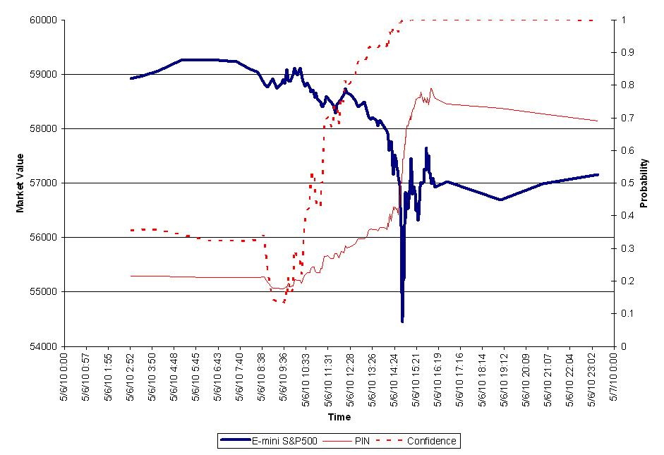

A. Algorithmic «trading»
The trading algorithmic consists of algorithms being accompanied by graphical analysis to identify the numerous price movements, volatilities levels or to issue a price arbitrage.
Indeed, depending on these variations which serve as conditions, meeting criteria in the algorithms, the choice will be programmed with the aim of making the most of it.
We realize that trading managed by algorithms is more profitable than if it is managed by a human.
Algorithmic trading is done using the robots of trading.
Trading robots or " Expert Advisor " are tools that automate precise orders using algorithms that operate in binary.
Using mathematical algorithms, the robot can analyse the stock market by processing and synthesising the various signals emitted by the market.
On the one hand, the trading robot is much more performing because it is designed to be operational at any time (i.e. 24 hours a day and therefore 7 days a week). This means that they can carry out continuous analysis. To put it in a nutshell, these robots are capable of processing more than 7000 orders within a few milliseconds.
Because of their efficiency, these robots allow open-capital companies to raise their capital, due to the increase in trading capacity between humans and robots.
Today, algorithmic trading accounts for 50% of orders on the stock exchange in France and 70% in the United States. These percentages can be explained thanks to these Advantages, which are the following:
- The market is more fluid because it is automated
- Lower trading costs for traders
- Prices are variable according to the context, i.e. it adapts to
B. Unbalanced reliability
However, the subject of trading robots is a subject of debate, as some see a potential future problem with these algorithms :
- Increases the volatility of financial markets
- Distorts the market economy in relation to the real economy
- Due to potential bugs on these algorithms, this can have VERY serious consequences on the economy.
One notable example is what can be called " Flash Crash " or " Flash Crash " an economic crisis in 2010 that did not last that long, but it was enough to cause many consequences over several years.
This crisis began in June 2010 at 2:32 pm, during high volatility, an order was sent to the market by a trading robot. It is a question of $4.1 billion in order to obtain a stable position, i.e. the objective of the algorithm is to obtain a certain rate based on the % of the trading volume calculated at the previous minute, without taking into account the prices and the execution time.
This caused a very big loss that led to a crisis, when it lasted "only" 38 minutes.
This decrease can be seen in the graph below :

Here we see a downward spike due to the "Flash Crash".
Thus, one can notice the consequences and the importance of such machines as trading robots. Algorithmic trading with robots is possible thanks to software that allows it. One of these software programs is called "ProRealTime" which allows you to program your own automatic trading system.
You can program your robot using different algorithms to develop functions and procedures that will be reused later:
Algorithm for the purchase of n shares of a company under certain conditions :
Begin
If the company validates the established conditions
↳ Purchase of n shares of the company (n to be determined)
End
Algorithm of sale of n shares of a company under certain conditions:
Begin
If the company validates the established conditions
↳ Sale of n shares of the company (n to be determined)
End
By combining these algorithms, a more efficient algorithm is obtained :
Begin
If such a company has a share price of less than 50%
↳ Purchase of 100 shares of this company
Else if you already own shares in this company
↳ Sale of all our shares in this company
End
Translated with www.DeepL.com/Translator (free version)
Évidemment, il existe des algorithmes beaucoup plus complexes. On peut quand même s’imaginer comment les algorithmes sont utilisés sur les robots de trading. Cependant, il faut être vigilant avec le trading algorithmique car au moindre problème, les risques de pertes ne sont que trop importants.
C. The Big Data
As far as the economy itself is concerned, the algorithms, over time, have made it possible to create the concept of artificial intelligence (as said before), this allows, for example, to favour the use of massive data, as used for the Big Data. Moreover, as far as the processing of these data is concerned, we realise that algorithms can represent a lot of power, due to their profitability. This therefore leads to repurchase of the algorithm by other companies.
One notable example is the GAFAGoogle, Amazon, Facebook and Apple, which brings together the companies Google, Apple, Facebook and Amazon which have carried out company buyouts where the business is based on the algorithm. The GAFA realised that the algorithm could help them process their huge amounts of data. Indeed, thanks to this, it is possible to analyse consumer behaviour, financial risk potential and language or face recognition. With hindsight, we can see that the more time passes, the more obsolete the statistics become and are then replaced by algorithms.